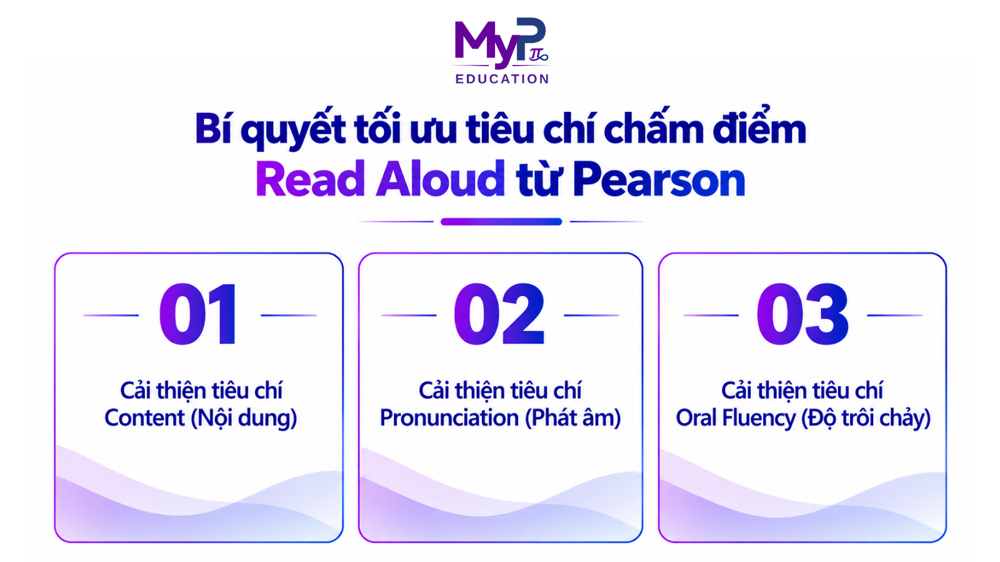

PTE Read Aloud là dạng bài mở đầu quan trọng trong phần thi Speaking & Writing của bài thi PTE Academic. Nhìn từ góc độ kiểm tra đánh giá ngôn ngữ, dạng bài này không chỉ yêu cầu thí sinh nhận diện mặt chữ hay đọc với tốc độ cao.
Một phần trả lời tốt đòi hỏi sự kết hợp giữa phát âm, độ trôi chảy và cấu trúc văn bản. Trong bài viết này, MyP Education sẽ phân tích cơ chế đánh giá và chia sẻ chiến thuật làm bài hiệu quả cho bạn.
Cấu trúc bài thi và tiêu chí chấm điểm Read Aloud chuẩn Pearson
Hiểu cách thuật toán Pearson vận hành giúp bạn ôn luyện đúng hướng. Điều này cũng giúp tiết kiệm tối đa thời gian chuẩn bị dạng bài này.
Tổng quan dạng bài trong lộ trình luyện thi PTE Read Aloud
Dạng bài PTE Read Aloud yêu cầu thí sinh đọc thành tiếng một đoạn văn bản ngắn xuất hiện trên màn hình máy tính. Đây là phần thi tích điểm cho cả hai kỹ năng Speaking và Reading:
Quy định dạng bài PTE Read Aloud | Chi tiết quy định từ Pearson |
|---|---|
Số lượng câu hỏi | 6 – 7 câu trong bài thi chính thức. |
Độ dài đoạn văn | Tối đa 60 từ mỗi đoạn. |
Thời gian chuẩn bị | 30 – 40 giây (chuẩn bị trước khi micro ghi âm). |
Quy tắc ghi âm | Chỉ được ghi âm 1 lần duy nhất ngay sau tiếng bíp. |
Cơ chế tính điểm | Điểm từng phần (Partial Credit), đóng góp điểm cho cả Speaking & Reading. |
Khi tham gia bài thi, bạn cần lưu ý rằng thời gian chuẩn bị dao động từ 30 đến 40 giây tùy thuộc vào độ dài của đoạn văn. Ngay sau khi kết thúc thời gian chuẩn bị, một tiếng "bíp" sẽ vang lên và thanh tiến trình ghi âm bắt đầu chạy. Bạn chỉ có đúng một lượt thu âm duy nhất cho mỗi câu hỏi PTE Read Aloud.
Mốc thang điểm chi tiết từ hệ thống chấm điểm Pearson
Hệ thống AI của Pearson định lượng bài đọc của thí sinh dựa trên 3 tiêu chí với các mốc điểm cụ thể từ tài liệu chính thức PTE Academic Test Taker Score Guide:
Yếu tố chấm điểm | Quy định chính thức từ Pearson | Giải thích nội dung Pearson đề cập |
|---|---|---|
Content (Nội dung) | • Rule: Each replacement, omission or insertion of a word counts as one error. • Maximum score: Depends on the length of the task prompt. | • Điểm tối đa phụ thuộc vào độ dài của đoạn văn bản gốc trong đề thi. • Mỗi hành vi đọc sai, bỏ sót hoặc tự ý thêm từ đều tính là 1 lỗi. |
Pronunciation (Phát âm) | 5 Native-like 4 Advanced 3 Good 2 Intermediate 1 Intrusive 0 Non-English | • Thang điểm chấm từ 0 đến 5 điểm. • Đánh giá mức độ phát âm chuẩn xác và tính dễ hiểu của câu trả lời theo các cấp độ định sẵn. |
Oral Fluency (Độ trôi chảy) | 5 Native-like 4 Advanced 3 Good 2 Intermediate 1 Intrusive 0 Non-English | • Thang điểm chấm từ 0 đến 5 điểm. • Đánh giá nhịp điệu, tốc độ và tính liên tục của bài đọc theo các cấp độ định sẵn. |
Nguồn: PTE Academic Test Taker Score Guide
Việc nắm rõ tiêu chí chấm điểm Read Aloud sẽ giúp thí sinh biết cách phân bổ chiến thuật hợp lý giữa độ chính xác từ vựng và độ trôi chảy khi đọc.
Bí quyết tối ưu tiêu chí chấm điểm Read Aloud từ Pearson

Để đạt điểm số tối đa trong bài thi PTE Read Aloud, thí sinh cần hiểu rõ cách thức chấm điểm của từng tiêu chí và áp dụng các giải pháp khắc phục lỗi sai triệt để.
Cải thiện tiêu chí Content (Nội dung)
Nhiều người học thường tập trung quá nhiều vào phát âm hay độ trôi chảy mà xem nhẹ tiêu chí Content trong bài thi. Trong thực tế, đây là tiêu chí cốt lõi quyết định trực tiếp đến điểm Reading thông qua cơ chế chấm điểm chéo của Pearson.
Nguyên lý chấm điểm Content của thuật toán Pearson
Thuật toán của Pearson so sánh trực tiếp bản ghi âm của thí sinh với văn bản gốc hiển thị trên màn hình. Mỗi từ vựng đọc đúng chuẩn sẽ được tính là 1 đơn vị điểm. Các hành vi sau đây đều khiến thí sinh bị trừ điểm Content nặng nề trong bài thi:
- Bỏ sót từ: Bỏ qua từ khó hoặc các từ ngắn như giới từ, từ nối (a, an, the, of, and).
- Thêm từ: Tự ý chèn thêm các từ đệm hoặc từ không có trong văn bản gốc.
- Đọc sai từ: Đọc nhầm từ này sang từ khác do nhìn lướt vội vàng (ví dụ: đọc important thành importance).
Mẹo giữ trọn điểm Content từ MyP Education
Để giữ trọn vẹn điểm Content khi làm bài PTE Read Aloud, MyP Education khuyến nghị thí sinh bám sát các nguyên tắc sau:
- Ưu tiên độ chính xác từng từ vựng: Không đọc lướt qua loa làm mất từ hoặc biến dạng đuôi danh từ/động từ (như đuôi -s, -es, -ed).
- Không lặp lại từ khi đọc sai: Nếu phát hiện bản thân đọc lầm một từ, tuyệt đối không dừng lại để tự sửa sai. Việc đọc tiếp mượt mà sẽ bảo vệ điểm Oral Fluency mà chỉ bị tính lỗi nhỏ ở 1 từ Content trong phần thi này.
Cải thiện tiêu chí Pronunciation (Phát âm)
Tiêu chí phát âm trong PTE Read Aloud hướng tới tính dễ hiểu theo tiêu chuẩn giao tiếp quốc tế, thay vì bắt buộc thí sinh phải có giọng bản xứ hoàn hảo.
Các rào cản phát âm thường gặp ở người học
Trong quá trình ôn luyện, học viên thường gặp phải các vấn đề kỹ thuật phổ biến sau:
- Nuốt âm tiết cuối (ending sounds) hoặc phát âm thiếu chính xác các phụ âm ghép.
- Đặt sai vị trí trọng âm từ (word stress), dẫn đến làm thay đổi cấu trúc âm tiết chuẩn.
- Phát âm từng từ rời rạc (staccato style), làm mất tính liên kết âm thanh tự nhiên của câu văn.
Định hướng tối ưu kỹ thuật phát âm từ MyP Education
Để cải thiện chỉ số Pronunciation trong bài thi, bạn nên luyện tập sửa từ ngay trong ngữ cảnh câu hoàn chỉnh thay vì chỉ luyện các từ đơn lẻ.
MyP Education khuyến nghị áp dụng kỹ thuật Đọc nhại (Shadowing Technique) để chuẩn hóa ngữ điệu. Bên cạnh đó, việc nắm vững bảng ký hiệu phiên âm quốc tế (IPA) và trọng âm câu là bước nền tảng giúp nâng cao năng lực phát âm bền vững.
Cải thiện tiêu chí Oral Fluency (Độ trôi chảy)
Oral Fluency phản ánh khả năng xử lý ngôn ngữ và duy trì luồng nói liên tục.
Tác động của lỗi ngập ngừng đến thuật toán chấm điểm
Các khoảng ngắt ngập ngừng làm giảm trực tiếp điểm trôi chảy của bài thi PTE Read Aloud:
- Lỗi ngập ngừng và phát ra tiếng uhm, ah khi suy nghĩ.
- Lỗi lặp từ hoặc tự sửa sai khi phát hiện bản thân đọc lầm một từ.
- Quá tập trung vào chi tiết từng từ dẫn đến việc ngắt câu sai cấu trúc ngữ pháp.
Nguyên tắc duy trì nhịp đọc và tốc độ ổn định
Trôi chảy không đồng nghĩa với việc ép bản thân đọc quá nhanh. Tốc độ tối ưu là tốc độ duy trì được sự tự nhiên và đúng nhịp thở.
Thí sinh nên áp dụng kỹ thuật chia cụm ngữ pháp (Grammatical Chunking), dừng nghỉ đúng vị trí dấu câu và các mệnh đề phụ. Phương pháp này giúp đảm bảo tính mạch lạc và hoàn thành phần thi trong khung thời gian quy định. Hiểu đúng tiêu chí chấm điểm Read Aloud ở hạng mục Fluency sẽ giúp bạn đọc tự tin hơn rất nhiều.
Lộ trình và phương pháp luyện thi PTE Read Aloud hiệu quả tại nhà
Quá trình tự học đòi hỏi một phương pháp luyện thi PTE khoa học và có tính hệ thống để chinh phục phần thi PTE Read Aloud:
- Rèn luyện thói quen đọc thành tiếng: Duy trì thực hành đọc các đoạn văn mang tính học thuật mỗi ngày là thói quen cốt lõi. Quá trình đọc cần gắn liền với việc quan sát cấu trúc dấu câu và phân tích ngữ điệu của văn bản.
- Phân tích cú pháp và chia cụm ý nghĩa: Nắm chắc ngữ pháp giúp bạn biết chính xác điểm cần ngắt nghỉ giữa các cụm ý trong bài đọc. Việc phân tích chủ ngữ, vị ngữ giúp thí sinh ngắt nghỉ đúng cấu trúc.
- Tra cứu từ vựng và ghi nhớ phiên âm chuẩn: Khi tiếp cận từ vựng mới trong các bài mẫu, bạn cần tra cứu đầy đủ cấu trúc trọng âm và âm tiết.
- Luyện tập qua bản ghi âm: Việc nghe và phân tích lại bản ghi âm cá nhân giúp học viên nhận diện chính xác các khoảng ngập ngừng hoặc lỗi mất âm cuối. Đây là phương pháp luyện thi PTE tự đánh giá rất hiệu quả.
- Cá nhân hóa lộ trình phát triển cùng MyP Education: Mỗi người học sở hữu một trình độ xuất phát điểm riêng biệt. Việc xây dựng kế hoạch học tập dựa trên dữ liệu phân tích điểm yếu cá nhân sẽ giúp tối ưu hóa thời gian và nguồn lực khi ôn tập.
5 Chiến thuật làm bài PTE Read Aloud đạt điểm tối đa
Áp dụng các chiến thuật làm bài sau đây sẽ giúp bạn tự tin kiểm soát tốt bài thi thực tế:
- Duy trì âm lượng và tốc độ tự nhiên: Giữ giọng đọc ổn định, âm lượng vừa phải và kiểm soát nhịp thở nhịp nhàng khi thực hiện bài thi.
- Khai thác tối đa 30–40 giây chuẩn bị: Phân tích nhanh văn bản, xác định các từ khó để nhẩm trước và lướt qua các dấu câu để định hình điểm ngắt nghỉ.
- Ứng dụng trọng âm câu: Nhấn giọng vào các từ mang nội dung chính để tạo nhịp điệu đọc tự nhiên.
- Kỹ thuật kiểm soát nhịp thở khi gặp từ khó: Khi gặp từ vựng chưa chắc chắn cách đọc trong bài, hãy áp dụng nguyên tắc đọc theo phản xạ âm tiết và duy trì liên tục luồng âm thanh.
- Quản lý thời gian ghi âm chuẩn xác: Bắt đầu phản xạ đọc ngay khi micro kích hoạt sau tiếng "bíp" và hoàn thành bài PTE Read Aloud trước khi thanh tiến trình kết thúc.
Lời kết
Dạng bài PTE Read Aloud phản ánh toàn diện năng lực tiếp nhận và truyền tải ngôn ngữ dạng nói. Việc xây dựng nền tảng từ phát âm chuẩn và duy trì nhịp đọc ổn định giúp bạn tối ưu hóa kết quả thi.
Áp dụng đúng các chiến thuật làm bài PTE Read Aloud sẽ giúp bạn tự tin làm chủ phòng thi. Đồng hành cùng MyP Education để tiếp cận các lộ trình luyện thi PTE Read Aloud chuẩn mực và nâng cao năng lực tiếng Anh chuyên sâu ngay hôm nay!